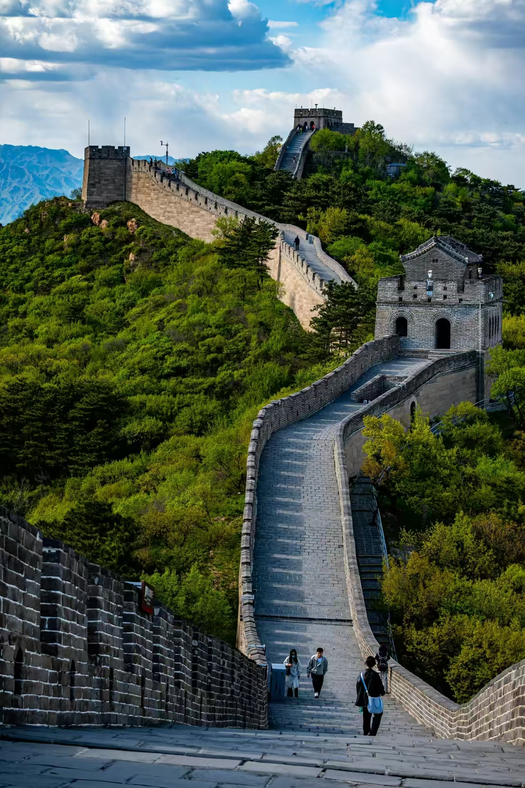

长城是中国古代的军事防御工程，是世界七大奇迹之一，1987年被列入世界文化遗产。北京段长城中最著名的是八达岭长城，是明长城中保存最好、最具代表性的一段。
八达岭长城位于北京市延庆区军都山关沟古道北口，是居庸关的重要前哨，古称"居庸之险不在关而在八达岭"。八达岭长城城墙高7.8米，顶宽5米，底宽6.5米，可以五马并骑、十人并行。城墙依山势修筑，蜿蜒起伏，气势雄伟。
"不到长城非好汉"，登上八达岭长城，可以俯瞰群山连绵，长城如巨龙蜿蜒在崇山峻岭之间，景色十分壮观。建议游览时穿舒适的运动鞋，可选择徒步或乘坐缆车上山。
门票：旺季40元/人，淡季35元/人
开放时间：7:30-17:30（旺季），7:30-17:00（淡季）
交通：德胜门乘坐877路公交直达，或乘坐S2线火车